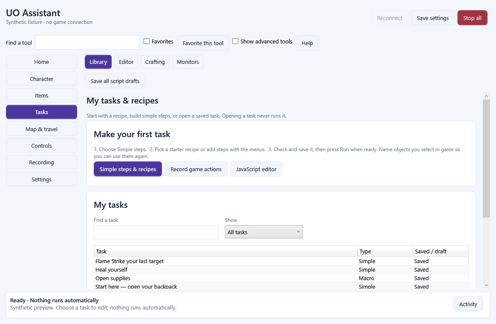
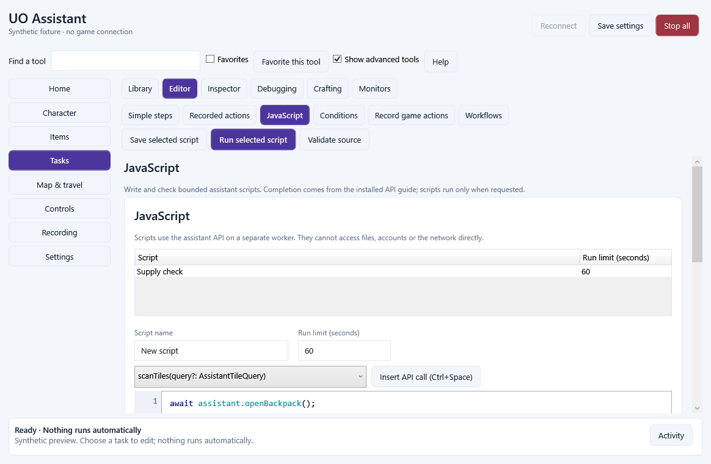

Eight categories, with tabs for related tools
Choose a category on the left, then a tab across the top. A second row appears when a tab has related tools. Each tool has its own clearly named Save and Run actions. Stop all is always at the top of the window.
Home: Overview, activity and journal, timers.
Character: Health and pets, targets and saved objects, equipment, combat and cooldowns.
Items: Bags and search, loot, moving and restocking, vendors and use-once items.
Tasks: Your task library, Simple steps, JavaScript, recorded actions, workflows, crafting, monitors and debugging.
Map & travel: Map and markers, walking and waypoints, runebooks, team map and recovery.
Controls: Hotkeys, keyboard and mouse bindings, action bars, pet/boat/custom command panels, display and sound.
Recording: Video capture, replay and recording settings. Action recording for macros is under Tasks.
Settings: Profiles, play styles, appearance, backups and diagnostics.
Find a tool accepts familiar words such as bandage, trees, bags and hotkey. Favorites retain your saved tools. Show advanced tools reveals specialist editors, inspectors and diagnostics. Opening an advanced tool from a direct link reveals it automatically. All previous features remain available.
Make your first task
Open Tasks / Library and choose Simple steps & recipes. Pick a starter recipe and choose Use this recipe, or start blank. Add a step writes the command for you. Give selected objects memorable names, such as wood bag or lumberAxe.
Check steps validates your source without running it. Save script keeps it in your profile. Run these steps runs the current editor. The exact run limit is shown in seconds; the Custom preset preserves values such as 90 seconds. Stop all ends active assistant work.
The shared task library lists Simple Scripts, JavaScript, macros and visual workflows. Choose Open selected task to edit. Opening, searching or saving a task never starts it.

Keep your script drafts
Switching between scripts, recipes or tools keeps your unsaved Simple and JavaScript name, source and run limit in memory. The task library marks these as Unsaved draft. Invalid text stays available to correct.
Use Save script in the editor or Save all script drafts in Tasks / Library. Saving all drafts validates every draft first and commits them together. If a draft is invalid or the file cannot be saved, drafts stay in the app and saved scripts are preserved.
Closing with unsaved scripts asks whether to save all, discard them or cancel closing. Each tool saves its own settings; script editors have their own Save script action. Drafts are kept in the running application, not a crash-recovery file. Save important work before a forced shutdown.
Other definition forms now restore their previous saved values if validation or persistence fails. The activity window retains recent messages so you can read a failure explanation after the footer changes.
Choose objects and saved tasks
Container and object fields offer Choose in game and a saved-object list. The loaded name or saved name appears alongside the object ID. The numeric ID remains editable for advanced use. Open bags in game before searching or moving their contents.
Controls / Hotkeys offers the action catalogue and keyboard/mouse bindings. For a script, macro, outfit or travel action, choose its saved task from the list. A short identity suffix distinguishes duplicate names. Shortcuts retain that identity after renaming a task.
Unique older name-based shortcuts are resolved automatically. An ambiguous or missing older task stops with an explanation; choose the intended task again. Deleting a task never redirects its shortcut to another task with the same name.
Inventory search uses a known loaded item name even when full properties have not arrived. Unknown properties remain marked unknown; property matching still requires complete received properties.
Keep the advanced tools close
Show advanced tools exposes JavaScript, macro blocks, visual workflows, source debugging, inspectors, conversion tools, priority observers and diagnostics. Existing scripts and the 48-method JavaScript API remain available. Source debugging continues to use JavaScript.
Legacy page names remain the keys for favorites and saved layouts. Some mixed pages are separated: walking is under Map & travel, use-once lists under Items, target presets under Character, and keyboard/mouse bindings under Controls. Video and replay remain under Recording.
Settings / Appearance adjusts text size, contrast, panel sizes and window placement. Text scaling now enlarges the content without scaling the whole window out of its available space. Tabs scroll horizontally when needed. Field labels are available to assistive technology.

Release checks and remaining checks
This is an unsigned Windows x64 development preview. Automated interface checks use synthetic game state. They cover the category destinations, script drafts, custom limits, duplicate names, failed saves, accessibility labels, large text and disconnected closing.
Live Invicta gameplay, shard-specific graphics and messages, populated-world performance and receiving-system recording hardware still need manual checks. Installer lifecycle checks use isolated test identities and folders; the existing installed application is preserved. No game data, account data or private profiles are distributed.
External Qodo review was unavailable because the CLI was signed out. Local review and automated checks are recorded separately. Downloading and installing remain explicit user actions.